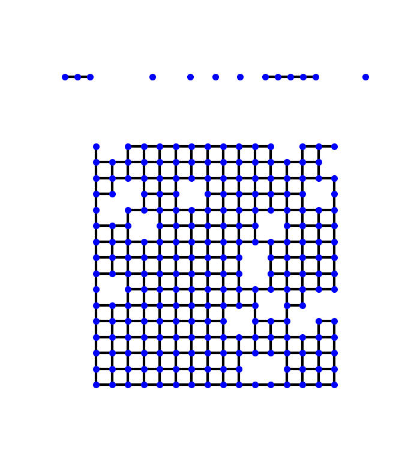

Note
Go to the end to download the full example code.
Lifshitz Tails in the Density of States of a Disordered Lattice#
Disorder moves states beyond the band edge of the clean crystal, but very few. Lifshitz (1964) explained why: a state deep in the tail needs a large region of size \(\ell\) where the disorder happens to conspire (every site low, or every site present), which costs a probability exponentially small in the volume \(\ell^d\), while the kinetic energy of a state confined to that region only falls as \(1/\ell^2\). Balancing the two gives the integrated density of states near the lowest possible energy \(E_0\),
an essential singularity, smaller than any power of \(E - E_0\).
In 1D, with sites missing at random, the law is exact: a chain where each site is present with probability \(p\) splits into segments, a segment of \(\ell\) sites occurs with weight \(p^\ell\), and its lowest level is \(E_\ell = -2t\cos[\pi/(\ell+1)] \approx -2t + t\pi^2/\ell^2\), so that \(\ln N(E) \approx -\pi\ln(1/p)\,\sqrt{t/(E + 2t)}\).
In 2D the tail is just as real but much harder to reach: the asymptotic law sets in only where \(N(E)\) is far below one state per sample. What a finite lattice, with any method, can show is its hallmark, \(N(E)\) falling faster than every power of \(E - E_0\), and where the sample’s own tail stops.
import numpy as np
import matplotlib.pyplot as plt
from scipy.integrate import cumulative_trapezoid
from scipy.linalg import eigvalsh_tridiagonal
import tbkit.kpm as kpm
import tbkit.lattices as lattices
from tbkit.system import System
The diluted chain: the exact Lifshitz law#
remove_sites() removes 40% of the sites of
a 200 000-site chain at random. The Hamiltonian is tridiagonal, with
a zero bond wherever a site is missing, so its full spectrum is cheap.
The integrated density of states just above \(E_\ell\) falls by
\(p\) per added site, \(\ln N(E_\ell) \simeq \ell\ln p\).
p, n = 0.6, 200000
lat = lattices.chain()
lat.get_lattice(n1=n)
rng = np.random.default_rng(0)
lat.remove_sites(np.flatnonzero(rng.random(n) > p).tolist())
sys = System(lat)
sys.set_hopping([{'n': 1, 't': -1.}])
sys.get_ham()
en = eigvalsh_tridiagonal(sys.ham.diagonal().real, sys.ham.diagonal(1).real)
assert en.min() > -2. # no state below the clean band edge ...
ells = np.arange(4, 15)
e_ell = -2. * np.cos(np.pi / (ells + 1))
n_int = np.array([np.mean(en < e + 1e-9) for e in e_ell]) # N(E) just above E_ell
slope = np.polyfit(ells, np.log(n_int), 1)[0]
print('ln N(E_l) = {:.3f} l + const (expected ln p = {:.3f})'.format(slope, np.log(p)))
assert abs(slope / np.log(p) - 1.) < 0.05 # ... but an exponentially thin tail just above it
def square(n, p=1., w=0.):
'''An n x n square torus, with a fraction 1 - p of sites removed or onsite disorder w.'''
lat = lattices.square()
lat.get_lattice(n1=n, n2=n)
if p < 1.:
rng = np.random.default_rng(0)
lat.remove_sites(np.flatnonzero(rng.random(lat.sites) > p).tolist())
sys = System(lat, periodic=True)
sys.set_hopping([{'n': 1, 't': -1.}])
sys.set_onsite({'a': 0.})
if w:
state = np.random.get_state()
np.random.seed(0)
sys.set_onsite_dis(alpha=w)
np.random.set_state(state)
sys.get_ham()
return sys
def kpm_dos(sys, e, bounds):
'''Density of states per site, and integrated density of states in states.'''
rho = kpm.dos(sys.ham, n_moments=1024, n_random=8, e_grid=e, seed=1, bounds=bounds)[1]
return rho / sys.lat.sites, cumulative_trapezoid(rho, e, initial=0.)
ln N(E_l) = -0.521 l + const (expected ln p = -0.511)
The diluted square lattice: faster than any power#
With 5% of the sites of a \(400 \times 400\) square lattice
removed, the lowest possible energy is still the clean edge
\(E_0 = -4t\), reached only inside ever larger vacancy-free disks.
The kernel polynomial method (dos()) gives
\(N(E)\). Near a clean 2D band edge the density of states is a
constant \(1/4\pi t\), so \(N \propto E - E_0\) and the local
exponent \(d\ln N/d\ln(E - E_0)\) is 1. In the diluted lattice it
keeps growing towards \(E_0\).
The asymptotic constant itself, \((E - E_0)\ln N \to -\pi j_0^2\ln(1/p)\) (\(j_0\) the first zero of the Bessel function \(J_0\), from the ground state of a disk), takes over only for \(E - E_0 \lesssim 0.01t\), where \(N \sim e^{-90}\): no sample holds such a state, which is why the quantitative test is the 1D one.
xs = np.array([0.05, 0.1, 0.2, 0.4, 0.8]) # E - E_0
e_edge = np.linspace(-4., -3., 401)
clean, diluted = square(200), square(400, p=0.95)
n_clean = kpm_dos(clean, e_edge, (-4.01, 4.01))[1] / clean.lat.sites
n_dil = kpm_dos(diluted, e_edge, (-4.01, 4.01))[1] / diluted.lat.sites
exp_clean = np.diff(np.log(np.interp(xs - 4., e_edge, n_clean))) / np.diff(np.log(xs))
exp_dil = np.diff(np.log(np.interp(xs - 4., e_edge, n_dil))) / np.diff(np.log(xs))
print('local exponents d ln N / d ln(E - E_0), from E - E_0 = 0.8t down to 0.05t:')
print(' clean {}'.format(np.round(exp_clean[::-1], 2)))
print(' diluted {}'.format(np.round(exp_dil[::-1], 2)))
assert np.allclose(exp_clean, 1., atol=0.1) # N = (E - E_0)/4 pi
assert np.all(np.diff(exp_dil) < 0) and exp_dil[0] > 5. # steeper and steeper towards E_0
print('clean edge: N ~ (E - E_0)^1; diluted tail: local exponent rises past 5: OK')
local exponents d ln N / d ln(E - E_0), from E - E_0 = 0.8t down to 0.05t:
clean [1.04 1.03 1.03 1.02]
diluted [1.27 1.51 2.38 7.23]
clean edge: N ~ (E - E_0)^1; diluted tail: local exponent rises past 5: OK
Uniform disorder: where a finite sample’s tail stops#
With onsite energies uniform in \([-W, W]\)
(set_onsite_dis()), \(E_0 = -4t - W\).
The density of states of a \(200 \times 200\) sample spills past
the clean edge \(-4t\), then collapses at the sample’s lowest
eigenvalue (get_eig_sparse()), more than
\(t\) above \(E_0\). The kernel polynomial method finds no state
below it, as it should: the cutoff is the sample’s, not the method’s.
Further down the integrated density of states is less than one state
per 40 000 sites, so the rest of the tail exists only in larger samples.
W = 2.
dis = square(200, w=W)
dis.get_eig_sparse(n_eig=1, sigma=-4. - W)
e_min = dis.en[0].real
e_dis = np.linspace(-6., -3., 241)
bounds = (-4. - W - 0.01, 4. + W + 0.01)
rho_dis, count_dis = kpm_dos(dis, e_dis, bounds)
rho_clean = kpm_dos(clean, e_dis, bounds)[0]
assert e_min < -4.5 and e_min - (-4. - W) > 1. # past the clean edge, far above E_0
assert np.interp(e_min - 0.05, e_dis, count_dis) < 1. # no state below the lowest eigenvalue ...
assert np.interp(e_min + 0.2, e_dis, count_dis) > 10. # ... and the sample's tail just above it
print('W = {:g}: lowest eigenvalue {:.3f}, {:.2f}t above E_0; KPM count below it < 1 state: OK'
.format(W, e_min, e_min + 4. + W))
W = 2: lowest eigenvalue -4.852, 1.15t above E_0; KPM count below it < 1 state: OK
The three tails#
fig, axes = plt.subplots(1, 3, figsize=(15, 4.2))
e_fine = np.linspace(-1.97, -1.6, 400)
axes[0].semilogy(1 / np.sqrt(e_fine + 2.), [np.mean(en < e) for e in e_fine], 'C0', label='diluted chain')
axes[0].semilogy(1 / np.sqrt(e_ell + 2.), np.exp(np.polyval(np.polyfit(ells, np.log(n_int), 1), ells)),
'k--', label=r'fit through the $E_\ell$')
axes[0].set_xlim(1.6, 6.)
axes[0].set_xlabel(r'$(E + 2t)^{-1/2}$')
axes[0].set_ylabel('integrated DOS $N(E)$')
axes[0].set_title('1D, $p = {}$: $\\ln N$ linear in $(E-E_0)^{{-1/2}}$'.format(p))
axes[0].legend()
x = e_edge[1:] + 4.
axes[1].loglog(x, n_clean[1:], 'C7', label='clean')
axes[1].loglog(x, n_dil[1:], 'C0', label='5% vacancies')
axes[1].loglog(x, x / (4 * np.pi), 'k:', label=r'$(E-E_0)/4\pi$')
axes[1].set_xlim(0.03, 1.)
axes[1].set_ylim(1e-6, 0.2)
axes[1].set_xlabel('$(E - E_0)/t$')
axes[1].set_ylabel('integrated DOS $N(E)$')
axes[1].set_title('2D diluted: faster than any power')
axes[1].legend()
axes[2].semilogy(e_dis, np.maximum(rho_clean, 1e-9), 'C7', label='clean')
axes[2].semilogy(e_dis, np.maximum(rho_dis, 1e-9), 'C3', label='$W = {:g}t$'.format(W))
axes[2].axvline(e_min, c='C3', ls='--', label='lowest eigenvalue')
for x0 in (-4., -4. - W):
axes[2].axvline(x0, c='k', ls=':')
axes[2].set_ylim(1e-9, 1)
axes[2].set_xlabel('$E/t$')
axes[2].set_ylabel(r'$\rho(E)$ per site')
axes[2].set_title('2D uniform disorder: the sample ends before $E_0$')
axes[2].legend()
fig.tight_layout()

Total running time of the script: (0 minutes 23.747 seconds)